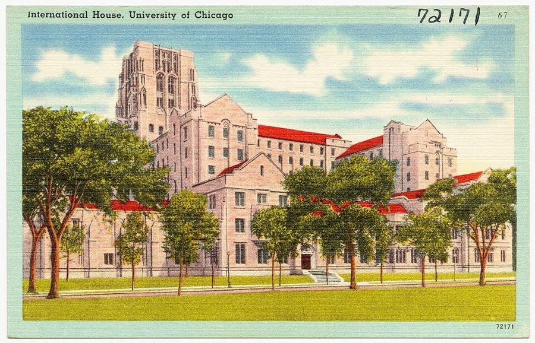
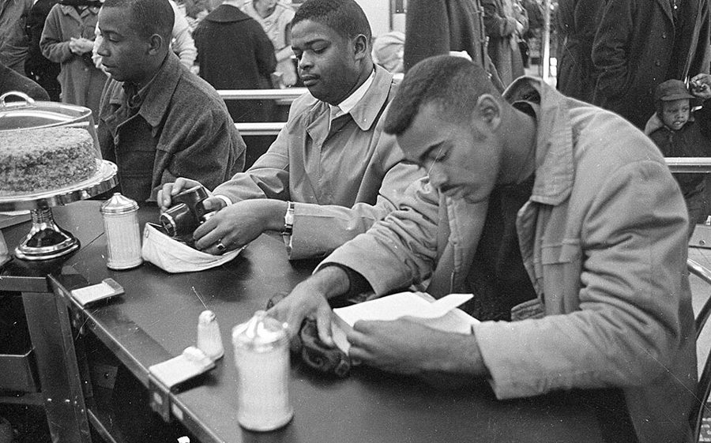
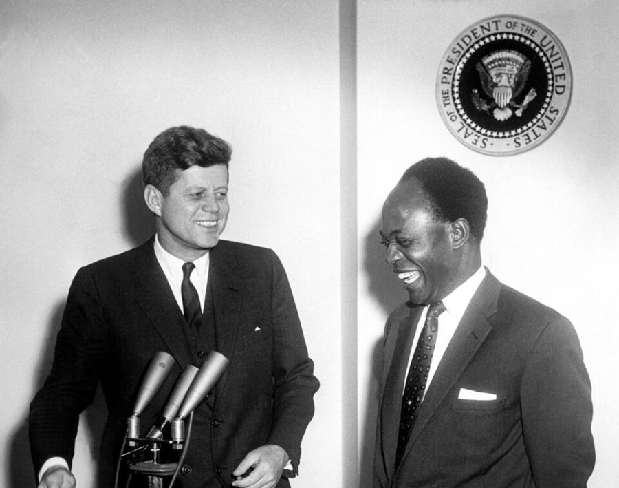

这一页在做什么
二十九到三十二岁。先在芝加哥大学读博，1961 年夏进华盛顿的劳工部当经济学家。十四封信，全是他写出去的，三类：给老师和老友报近况；一段从热恋到分手的感情；和左派朋友、和导师的几场笔仗。
读的时候分清两种声音：信是当年的话，那时他还自认是马克思主义者；信与信之间的段落是 2007 年补的。
1960 1961 1962 1963
芝加哥
实习
芝加哥大学
劳工部，华盛顿
Douglass，下一页
Hildred Nort Mrs. G Gloria Cy Stigler Ralph
本站示意图。一个圆点是一封信，按信上的日期画；空心的那封没写日期，从上下文看是 1961 年夏天。1960 年秋到 1961 年的信绕着 Audrey 转，1962 年的信几乎都在争论。

芝加哥大学的 International House，二十世纪三四十年代的明信片。读博时他住在这里的一个小房间。开头的串场文字说，这地方对他只是吃饭睡觉的地方。Tichnor Brothers, Publisher，公有领域，维基共享资源 这个十年开头有五段串场文字，第一封信之后、Audrey 出场的地方又有七段。它们把背景交代得很清楚，但那是四十多年后的口气。信里的他还不知道结局。
收信人和提到的人
这一页有七位收信人，都是他写过去的，没有别人写来的信。私人朋友书里只给了名，本站照书里的叫法。
Berkeley Cy
西海岸在很远的左边
芝加哥 他，到 1961 年夏
圣路易斯 1960 年底的年会
纳什维尔 Gloria 读医学院
密西西比 Alcorn Mrs. G，1962 年
Tuskegee Hildred 在这里教书
亚特兰大（静坐）
匹兹堡 Audrey 读大四
华盛顿 他，1961 年夏起
纽约州北部 Audrey 的家
New Brunswick 下一页
本站示意图，只表示大致方位，不按比例。蓝色的两个点是他自己住的地方（1960 年夏天的实习也在华盛顿），其余是信的另一头。串场文字说，他和 Audrey 一个在芝加哥、一个在匹兹堡，一学年见不了几面。
Hildred 在 Tuskegee Institute 教书的朋友 · 书里只有名 她寄来亚特兰大静坐的剪报，他回了两封信：一封谈静坐，一封批评黑人院校。口气是同辈之间的直话。
Nort Norton · 哈佛时的室友 1960 年秋有一封，这一页的最后一封也是写给 Nort 的。什么都说：女朋友、对上司的刻薄话、对民权运动的疑问。信里并提的 Irene，书里没有介绍。
Mrs. G Marie Gadsden · 霍华德的英文老师 这一页有四封。这几年她先在海外工作，1961 年秋回华盛顿住了几个月，1962 年初去密西西比教书。感情上的事他只跟她细说。
Audrey 化名 · 这一页不是收信人 1960 年夏天在华盛顿认识的女友，当时在《华盛顿邮报》实习，匹兹堡的大四学生，比他小十岁，父亲是医生。信里谈她的地方比谈经济学的多。
Gloria 1957 年认识的朋友 · 书里只有名 当年是 Mt. Holyoke 的学生，后来去 Meharry 读医，刚毕业，嫁了同学。她来信祝他幸福，他回信说那段感情已经结束。
Cy 哥伦比亚大学读研时的同学 · 书里只有名 两人当年都是左派。Cy 现在在 Berkeley，仍在极左一边，寄来一份激进刊物。三封回信都在反驳，之后通信渐渐断了。
Professor Stigler George J. Stigler · 芝加哥大学教授 他专程投奔的导师。人已离校，靠通信商量博士论文题目。称呼后面用冒号，是公事信的写法；给朋友的信用逗号。
Ralph 哈佛时的另一位室友 · 书里只有名 只有一封，谈社会科学该问什么问题。Gloria 就是通过 Ralph 当年的女友 Sandra 认识的。
Sterling Brown 只被提到 · 霍华德的教授 当年和 Mrs. G 一起推荐他进哈佛的人。信里引了 Brown 对全 A 学生的一个看法，拿来说 Audrey。
H. Gregg Lewis 只被提到 · 芝加哥大学教授 最后一封信末尾那段对话里的教授。名字是编书时用方括号补的，原信只说 one of my profs。
两个 Ralph，两个室友。 收信人 Ralph 是哈佛室友；给 Cy 的信里的 Ralph Bunche 是联合国的外交官，见背景。Nort 和 Ralph 都是哈佛室友，串场文字前面说 former room mate，后面说 old room-mate，是两个人。
同一个人的几种叫法。 串场文字写 Mrs. Gadsden，信里称 Mrs. G；信末的 my favorite teacher、另一封信方括号里的 a former Howard professor [Mrs. G] 也都是她。这一页的星号盖住了三样东西：Audrey 的学校、劳工部的一位上司、Cy 寄来的那篇文章的作者。本站不猜。
信件地图
一条是一封信。斜体字是那封信正文开头的几个词，照这一版屏幕上的字抄的，在 Kindle 里搜它就能跳过去。编号是黄底的，是别人写来的信；这一页没有。「留意」只给方向，答案在信里。
Received the clippings you sent 1960 年 3 月 22 日 · 写给 Hildred 留意：他当时对静坐是什么态度；信后面那段 2007 年的话又怎么说。Here at the University of Chicago 1960 年 4 月 21 日 · 写给 Hildred 留意：教授那句话比的是哪两种学生；他把账算在谁头上。Back in harness again with mixed 1960 年 10 月 9 日 · 写给 Nort 留意：他怎么向老朋友介绍 Audrey；他对劳工部的人是什么评价。Your last letter was even more 1960 年 12 月 30 日 · 写给 Mrs. G 留意：两位系主任的对比；他挑 Audrey 的毛病，用的是谁的标准。Audrey's mother seems to be a 1961 年 3 月 5 日 · 写给 Mrs. G 留意：Audrey 母亲的态度前后变了几次；最后一段他拿什么给自己打气。So good hearing from you at 没写日期，约 1961 年夏 · 写给 Mrs. G 留意：结局只用了一句话。他说要「借」，是借什么。You can't imagine how heart-warming it 1961 年 8 月 14 日 · 写给 Gloria 留意：开头的玩笑为什么只对她说得通；the four of us 是哪四个人。I really didn't think you were 1962 年 1 月 12 日 · 写给 Mrs. G 留意：他拿什么和去密西西比相比；一年前和现在的心情对照。The “black Negro” article has a 1962 年 3 月 15 日 · 写给 Cy 留意：他逐页批一篇文章，每一条用的是同一种问法。结尾两句是反问。I am sorry that you found 1962 年 4 月 25 日 · 写给 Cy 留意：引号里那段话是谁说的；「两套标准」他让了哪一半，哪一半不让。For one thing, there are no 1962 年 4 月 1 日 · 写给 Professor Stigler 留意：日期比上一封早，是编书时挪的。全信只有一个论点，看他对导师客不客气。My objection to the rosy pictures 1962 年 6 月 6 日 · 写给 Cy 留意：他反对的理由不是杀了多少人，是什么；最后两句在讲理论该怎么立。The quotation you cited regarding the 1962 年 7 月 31 日 · 写给 Ralph 留意：Ralph 引了谁的话；他用哪两个反问回敬；Hegel 和 Marx 的类比在说什么。The more I follow the integration 1962 年 8 月 6 日 · 写给 Nort 留意：他的疑问落在哪一点上；后半封换了话题，是和一位教授的对话。
背景：作者默认你知道的事
1960 年春天的静坐

1960 年 2 月 10 日，北卡罗来纳州达勒姆，Woolworth 商店午餐柜台前的静坐者。不是信里说的亚特兰大，是同一波行动。State Archives of North Carolina，公有领域，维基共享资源 Odyssey 伴读讲过：1960 年 2 月，北卡罗来纳的黑人大学生坐到只招待白人的午餐柜台前不走，几周内传遍南方。亚特兰大的学生 3 月中旬开始行动，第一封信写在一周之后。
参加的人看重的是：隔离本身就是羞辱，这道线得先拆掉。他 1962 年的疑问是另一回事：力气该先花在哪。
黑人院校
隔离时代，南方的黑人只能进专为黑人办的学校，信里叫 Negro colleges。这一页出现了四所：他的母校 Howard（华盛顿）、Hildred 教书的 Tuskegee（亚拉巴马）、Gloria 读医的 Meharry（纳什维尔）、Mrs. G 去的 Alcorn A & M（密西西比）。
他对这些学校的教学质量评价很低，同时又最想去那里教书。这条线贯穿整个 60 年代。
年会就是招聘会
美国经济学会（American Economic Association，信里缩写成 A.E.A.）的年会当时在圣诞节到新年之间开。各校的系主任在会上面试快毕业的博士生，想找教职就得去。
1960 年的年会在圣路易斯，正好撞上 Audrey 要他去见父母的那个假期。他选了年会。串场文字说，两人的关系也许就是从这里开始松动的。
Malthus 的「标准看法」
Say’s Law 和那场一百五十年前的争论，Odyssey 第 6 章的伴读讲过。给 Stigler 的那封信只印了一段，争的是读法：Stigler 认为他抓的是 Malthus 零星说过的几句话，不是 Malthus 一贯的看法。
他回的是：Malthus 在 Principles of Political Economy （1820）里和在私人通信里说的是一回事，没有哪两处互相打架。
古巴和加纳，1962 年

1961 年 3 月 8 日，加纳总统 Kwame Nkrumah（右）访问白宫，和肯尼迪在一起。Abbie Rowe，公有领域，维基共享资源 1959 年初 Castro 推翻古巴的 Batista 政权；1961 年 4 月，美国支持的流亡者在猪湾登陆失败。加纳 1957 年脱离英国独立，领导人是 Nkrumah，1958 年的《预防性拘留法》允许不经审判关押反对者。
当时西方的左派对这两个新政权寄望很高。Cy 寄来的刊物替它们辩护，他的三封回信有两封在驳这个。
Cy 那一边
他的回答
非洲人逃离奴隶制， 是出于对文化传承的自豪
凡是囚犯都想逃。 传承淡了，逃的人少了吗？
美国黑人的斗争，和殖民地 人民的斗争已经分不开
因果上几乎无关。归成一类， 只是脑子里的分法
Ralph Bunche 为什么 不就黑人问题表态
外交官不该插手 和本职无关的国内争论
对古巴和加纳， 可以用另一套标准
道德上也许可以，事实上不行： 暴政还是得叫暴政
本站示意图。Cy 的信和那份刊物书里都没印，左边一栏是从他的回信里倒推出来的，只能算他转述的对方。前三行是刊物上那篇文章的说法，对应 3 月的信；最后一行是 Cy 自己的意见，对应 4 月和 6 月的信。
Ralph Bunche
Ralph Bunche，1951 年。Carl Van Vechten，公有领域，维基共享资源
美国黑人，政治学者，早年在 Howard 教书，后来进联合国，1950 年因调停第一次中东战争获诺贝尔和平奖，1962 年在联合国任高级职务。
那篇文章责怪这样一位有名望的黑人不替黑人说话。他的回答见上图第三行，原信里是两个带刺的反问。
Odyssey 里讲过这一段
这几年在回忆录的第 5 章后半和第 6 章开头。回忆录引过这一页的两封信，都只引了几句。
静坐的剪报 Odyssey 第 5 章（下） 回忆录引了给 Hildred 那封信的头两句，没说收信人的名字。这里是整段：他想到现场去，又怕自己坏事。两本书都在信后面补了一句后来的保留，这本书说得更重。
去那一页 → 1960 年夏天和圣路易斯 Odyssey 第 5 章（下） 回忆录讲的是波多黎各的糖和最低工资、那份要不来的数据、圣路易斯餐馆里的隔离，对 Howard 的系主任只有一句评语。信里没有糖业，有 Audrey、对上司的刻薄话、对那位系主任的一整段描写，和去年会的代价。
去那一页 → 劳工部那一年和 Stigler Odyssey 第 6 章（上） 预算局三天辞职、公寓被盗、给部长写材料，信里一件没提。和 Stigler 的分歧，回忆录是事后概括，这里是当时信里的一段。1962 年 8 月那封信，回忆录引了前半，只说写给一个朋友；这里知道是 Nort，后面还多出 Howard 的例子和一段对话。
去那一页 → Audrey，以及和 Cy 的争论 回忆录没写 回忆录只说那个夏天社交生活有了起色，没有 Audrey 这个名字。他怎样离开左派，回忆录归到劳工部的见闻上；和 Cy 的这三封信是另一面：同一时期，他怎么跟还在左边的朋友辩。
这一版的错字
只收会让人读不懂、或者在 Kindle 里搜不到的。第一格是屏幕上的字，照抄的；第二格是本站有把握的原字。问号前多出来的撇号全书都有，见「开读之前」，这里不列。
屏幕上的字 应为 在哪 we would not he able to not be able to Audrey 出场后的串场。be 认成了 he，后面还有一处 a job oiler a job offer 第 4 封信后面的串场：年会上没拿到聘书 tailing to go meet failing to go meet 同一段的下一句：代价是没去见 Audrey 的父母 (p. 1 I) (p. 11) 1962 年 3 月给 Cy 的信，引那篇文章的页码。数字 1 认成了字母 I the modem world the modern world 同一句的末尾。rn 认成了 m they.Jimction as a class they function as a class 同一段靠后 ('y seemed to resent Cy seemed to resent 两封给 Cy 的信之间的那句串场。搜 Cy 搜不到这一句 a fonner Howard professor a former Howard professor 1962 年 4 月给 Cy 的信 we arc still not justified we are still not justified 同一封信，讲加纳的那句 also had an exchange I also had an exchange 给 Ralph 的信前面的串场。句首的 I 掉了 began to he accompanied began to be accompanied 最后一封信前面的串场 equality-of-publicaccommodation equality-of-public-accommodation 1962 年 8 月给 Nort 的信。行末的连字符丢了，两个词粘在一起
破折号成了连字符。 这一版把破折号都印成了短横，而且前后不留空，如 military life-since 、different background-a family 、I wish I knew-I think 。看到两个不相干的词被短横连着，把它当破折号读。这一页没有做成图片的脚注或信头。
词与短语
按信的顺序排，串场文字里的词条归到它后面那封信的组里。斜体小字是那句话里的几个词，照这一版屏幕上的字抄的（撇号是直的），在 Kindle 里搜它就能跳到那一句。单个的生词长按就能查，这里收的主要是词典帮不上忙的。
1960 年 3 月 · 给 Hildred
what it was turning to
… foresaw what it was turning to. …
它转向了哪里
接着前半句的 turning point 往下说：都知道是转折点，没人看出转到哪去。这个十年的调子从这句定下。
study under
… to study under Professor Stigler the …
拜在……门下
under 加人名是师从。他先追到哥大，人走了，又追到芝加哥。
both literally and figuratively
… was cramped, both literally and figuratively. …
字面上、比喻上都是
cramped 两个意思都用上了：房间小，日子也憋屈。
light at the end of the tunnel
… light at the end of the tunnel. …
苦日子快到头的迹象
他说的是还看不见。从十七岁离家算起已经十二年。
sit-ins
… Sit-ins by young blacks protesting racial …
静坐抗议
见背景。同一段的 clippings 是剪报。
Found them very interesting
… Found them very interesting and was …
（我）觉得很有意思
省掉了主语 I。给熟人写信常这么写，像记事本。给 Nort 的信里一连串 Didn't 、Stopped by 、Spent 、Went 都是这样。
sprung to life
… our people have sprung to life and …
一下子活了过来
spring 的过去分词。our people 是黑人同胞，他和 Hildred 都在里面。
undermine the whole operation
… that would undermine the whole operation. …
把整件事搞砸
自嘲。静坐靠的是挨了骂不还嘴的纪律，他知道自己的脾气。
Negro
… of the 21 Negro restaurant workers in …
黑人
1960 年代通行的中性说法，黑人自己也这么说。60 年代末起被 black 取代，现在不用了。所以信里是 Negro，2007 年的串场文字里是 black。
steam table
… owner clear the steam table. Who …
保温餐台
餐馆里用蒸汽给菜保温的长台。
1960 年 4 月 · 给 Hildred
With hindsight
… With hindsight, I can see legal, …
事后看
全书的记号。这两个词一出现，说话的就是 2007 年的他，不是写信的他。
you would swear
… you would swear we were discriminating …
你准会一口咬定
swear 这里是「敢打赌」。教授的意思：分数低到像是故意压的，其实没有。
do all right
… from Negro colleges do all right. …
成绩不差
这句是全信的要害：他把「黑人学生」和「黑人院校出来的学生」分开了。
poor material
… these colleges get poor material but …
生源差
把学生叫 material（原料）。下一句加了引号、后面跟着 business 的那次，意思是「生源差这套说辞」。
a damn poor job
… do a damn poor job when they …
干得真够差的
damn 加强语气。他给熟人写信不避粗口，后面还有 as hell 、a damn sight 。
a ready excuse
… gives them a ready excuse for all …
现成的借口
ready 是随手可用的，不是「准备好」。
inbred
… their backward, narrow, inbred ideas. …
近亲繁殖出来的
说想法只在一个小圈子里打转。
1960 年 10 月 · 给 Nort
come to nought
… a black college came to nought, so …
落空
nought = nothing，美式多拼作 naught。
road to Damascus
… than a sudden “road to Damascus” conversion, …
一夜之间的大彻大悟
《使徒行传》里，迫害基督徒的扫罗在去大马士革的路上被强光击倒，从此改宗，成了使徒保罗。他说自己不是这样，是 erosion：一点一点蚀掉的。
be spared
… I was spared the shock that …
免受
spare 是「饶过」。别的左派转向时受的那种震荡，他躲过了。
whom I shall call
… young woman whom I shall call Audrey. …
我姑且叫她
明说这是化名。
Back in harness
… Back in harness again with mixed …
又套上挽具了
harness 是马的挽具。意思是假期完了，回来干活。
a hell of a summer
… been a hell of a summer. …
好一个夏天
a hell of a 只表示程度，好坏都能用。这里两样都有。
across the board
… not evenly so across the board. …
各方面全都
前半句夸她成熟，这半句往回收：不是样样都成熟。
muddle through
… we will muddle through together. Stopped …
磕磕绊绊地对付过去
不是什么豪言壮语。认识才四个月，他已经这么说。
in absentia
… taken care of in absentia. Don't …
人不在校
拉丁文。读博要 in residence 满若干年，之后考试和论文可以离校再补。Odyssey 第 6 章讲过。
pedestrian as hell
… people were as pedestrian as hell. …
平庸得要命
pedestrian 作形容词是平淡乏味，和行人无关。
vim and vigor
… the full vim and vigor of his …
精力正旺
固定搭配。整句是挖苦：这位上司不是老糊涂了，是正当年就这样。
genial mediocrities
… Most of them were genial mediocrities, …
和和气气的庸才
mediocrity 可以直接指人。
organization men
… genial mediocrities, real organization men.... …
组织人
William H. Whyte 1956 年的畅销书 The Organization Man 带红的说法：在大机构里随大流、求安稳的职员。
beisbol
… Went to concerts, ballet, beisbol, etc. …
棒球
不是扫描错字。这是西班牙语里 baseball 的拼法，他写着玩。
grinding time
… I logged in much grinding time and …
埋头苦读的钟点
grind 是磨，引申为苦干。log 是像记工时那样记下来。
go stale
… This year going stale shouldn't be …
学腻了，没了劲
stale 本来说面包放久了。
get back in gear
… although getting back in gear may be. …
重新进入状态
gear 是档位。句末的 may be 后面省了 a problem。
1960 年 12 月 · 给 Mrs. G
a tonic
… because it was a tonic at a …
一剂提神的药
半年后的另一封信里，他又用这个词说她。
I took the liberty of
… Incidentally, I took the liberty of showing …
我冒昧地……
书信套话：没先问你就做了。做的是把她的上一封信拿给 Audrey 看。
low and oily
… he struck me as low and oily. …
下作，油滑
low 说人品，不是个子。strike me as 是给我的印象。
deprecate
… He tended to deprecate teaching, which …
贬低
程序员熟悉的 deprecated 是同一个词。别和 depreciate（贬值）混。
grant-grabbing
… and grant-grabbing projects. He seems …
抢经费的
grant 是基金会或政府给的研究经费。前面的 research 加了引号，是不承认那算研究。
philistine
… one of those philistines who automatically …
不在乎学问的俗人
《圣经》里的非利士人，十九世纪起用来骂没有文化追求的人。
make his pitch
… and makes his pitch accordingly.... He …
照这个路数来游说
pitch 是推销员的那套说辞。
liberal Harvard
… my coming from liberal Harvard. I …
自由派的哈佛
美国的 liberal 指偏左，芝加哥的经济系偏右。系主任想不通哈佛出来的人怎么会去芝加哥。
academic “operator”
… contrast with our academic “operator” from Howard. …
学界的「能人」
operator 说人，是会钻营、会来事的。不是夸。
of-coursed aside
… impediments to be of-coursed aside. Unfortunately, …
拿一句「当然当然」拨到一边
他自己造的动词。说的还是 Howard 那位：你提疑问，对方满口 of course 就带过去了。
center of gravity
… or moral center of gravity within herself, …
重心，主心骨
物理学的重心。说她的判断都靠外面的框架撑着。
1961 年 3 月 · 给 Mrs. G
a factor of unknown proportions
… be a factor of unknown proportions in …
一个不知道有多大分量的因素
用写报告的口气说女友的母亲。下面的 random factors like me 是同一路玩笑。
blow over
… have expected it to blow over, for …
自己就过去了
本来说风暴。it 是两人的关系。
random factors like me
… no place for random factors like me. …
我这种计划外的变数
统计学的说法拿来自嘲。
set too well
… don't imagine it set too well when …
（没）让人舒服
往轻里说：她母亲很不高兴。现在多说 sit well 。
special delivery
… were exchanging special delivery letters every …
限时专送
美国邮局当年的加急服务，信一到就专人送上门。隔两天一封，家里人不可能没看见。
this was it
… I thought this was it, but …
我以为这下完了
This is it 指决定性的那一刻到了。这里是分手。
there is no transplanting backbone
… there is no transplanting backbone. So …
骨气是没法移植的
there is no …ing = 没法做某事。backbone 是脊梁，也是骨气。这是他对 Audrey 最重的一句话。
casting its shadow before it
… been casting its shadow before it for …
早就有了征兆
化用一句老话 Coming events cast their shadows before ，出自苏格兰诗人 Thomas Campbell 十九世纪初的一首诗。
personable and uninhibited
… nice personable and uninhibited young lady …
讨人喜欢，放得开
他对老师说得很直白：华盛顿另有人在。
my cup would runneth over
… my cup would runneth over. …
我就心满意足了
《诗篇》第 23 篇的 my cup runneth over （我的杯满溢）。runneth 是古体，前面再加 would 是故意的俏皮。句里的 my favorite teacher 就是收信人。
1961 年夏 · 给 Mrs. G
efficiency apartment
… bare little efficiency apartment that will …
不分卧室的小开间
美国说法，和效率无关。回忆录里被盗的就是这间。
emotional borrowing
… need some emotional borrowing to tide …
感情上先借一笔
经济学家的比方：眼下亏空，向她预支一点乐观。tide me over 是帮我撑过去。
I wish I knew-I think
… here I wish I knew-I think. I …
真想知道，大概吧
短横应是破折号。后面补的 I think 把前半句收回一半：也许不知道更好。
1961 年 8 月 · 给 Gloria
postgraduate work
… black institution for postgraduate work and …
本科以后的学业
这里是读医。美国的医学院要先读完四年本科才能进。下一句说她毕业了但还不是医生：还差实习和执照。
practicing medicine without a license
… guilty of practicing medicine without a license). …
无照行医
正经的罪名拿来开玩笑：你的信治好了我的牙疼，而你还没有执照。
the four of us
… would happen to the four of us …
我们四个
1957 年秋天在 Mt. Holyoke 的那四个人：他和 Gloria，Ralph 和 Sandra。要回到信前面的串场文字里才数得出来。
1962 年 1 月 · 给 Mrs. G
A & M
… to teach at Alcorn A & M, a …
农工学院
Agricultural and Mechanical 的缩写，美国许多州立学院的名字里有它。
People just don't go to Mississippi
… People just don't go to Mississippi. …
正常人是不往密西西比去的
just don't = 压根不。密西西比当时是隔离最严的州。头一句的 do it 指的就是去那里。
would sooner
… I would sooner volunteer to go into orbit. …
宁可
宁可报名上天绕地球。写信时美国还没有人进过轨道，John Glenn 的飞行在一个多月以后。
Crackers
… “Those Crackers are too bad.” …
南方的穷白人（蔑称）
不是饼干。佐治亚、佛罗里达一带的说法。说话的 Dr. Smith 是 Mrs. G 的朋友，书里只给了姓。
reverses
… series of disappointments and reverses, my …
挫折
熟词生义，作名词。
ride out a storm
… feeling of having ridden out storms that …
挺过风暴
船在风暴里撑到风停。
1962 年 3 月 · 给 Cy
morbid fascination
… a certain morbid fascination for me, …
明知难看又挪不开眼的那种吸引力
morbid 是病态的。像围观车祸。
smoke and goo and broken glass
… in smoke and goo and broken glass. …
一股烟、一摊黏糊、一地碎玻璃
实验炸了。goo 是黏糊糊的东西。
a shred of evidence
… there even a shred of evidence that …
一丁点证据
shred 是碎布条。
concomitant variation
… attempt to show concomitant variation. Looked …
共变
逻辑学的行话：说 A 影响 B，就得拿出 A 变了、B 也跟着变的证据。
a function of
… anyone is a function of what he …
取决于
数学里的函数。y 是 x 的函数，就是 y 由 x 决定。
lump together
… they can be lumped together by analogy, …
归成一堆
lump 是一团。带贬义：不加区分。
act in concert
… i.e., act in concert or behave differently …
一致行动
和音乐会无关。前面的例子是左撇子公交司机：能归成一类，不等于会一起行动。
speak out
… has not spoken out on the Negro …
公开表态
后面两次加了引号的 spoken out 是学对方的腔调。
the Postmaster General
… Why hasn't the Postmaster General …
邮政总长
General 不是将军。当时是内阁成员。问邮政总长为什么不谈外交，是在挖苦。
the Secretary of the Interior
… Why hasn't the Secretary of the Interior …
内政部长
美国的内政部管国有土地、国家公园和自然资源，不管治安，更不管国债。
1962 年 4 月 · 给 Cy
rest your case
… content to rest your case on this …
举证到此为止
法庭用语：律师说完这句就不再举证。意思是你只贴了个标签，没讲理由。
I am sorry that you found
… I am sorry that you found my …
很遗憾你觉得……
不是道歉。后半句马上说：更遗憾的是你只扔了个标签。
minus
… but he was minus any discipline and …
毫无
minus 当介词，等于 without。这是 Mrs. G 的话。discipline 是思维上的训练，不是纪律处分。
a damn sight
… be a damn sight closer scrutiny of …
……得多
口语里 a sight = a lot，只用来加强比较级。
our favorite catchwords
… is reciting our favorite catchwords while he …
我们爱听的那几句口号
our 把自己也算在里面：我们左派。他这时还在用「我们」。
inconvenient truths
… too little attention to inconvenient truths.... …
碍事的事实
这个说法后来因 2006 年的一部纪录片出了名，这里早了四十多年。
ex-Castro men
… the shooting of ex-Castro men is a …
原先跟着 Castro 的人
和前一句的 ex-Batista men （旧政权的人）只差一个名字。他认为枪毙自己人更能说明这个政权的去向。
1962 年 4 月 · 给 Professor Stigler
dissertation committee chairman
… him as dissertation committee chairman. He …
论文委员会主席
就是导师。博士论文由几位教授组成的委员会审，主席是拍板的人。
ad hoc
… interpretation on selected ad hoc remarks by …
就事论事、临时说的
拉丁文「为此」。程序员说的 ad hoc 是同一个意思。和它相对的是 standard view 。
advance
… know what to advance as a further …
提出（论点）
熟词生义。这句的意思：您只是坚持要我证明 Malthus 说的是他的本意，这没法反驳。
add up to
… many ad hoc statements add up to a …
加起来算是
全信的最后一句，一个反问：零星的话要说多少遍才算一贯的看法。对导师这样问，不算客气。
1962 年 6 月 · 给 Cy
keep up with
… have not kept up with those statistics) …
跟进
括号里是冷话：杀了多少人的「统计数字」，我没跟着数。
on the “brink”
… being on the “brink” of …
「濒临」
引号里是对方文章的用词。他的意思是：不经审判关人几年，早就不是悬崖边上了。
austerity
… and the austerity which is said …
紧日子
政府要老百姓勒紧裤带。is said to be 是「据说是」，他不认这个说法。
blanket excuses
… bland repetition of blanket excuses.... To …
一揽子的借口
blanket 作形容词：一条毯子全盖住，不分情况。
verifiable or refutable
… must be verifiable or refutable, in …
能被证实，或者能被驳倒
科学哲学的行话。一个说法如果什么证据都驳不倒它，就等于什么也没说。
1962 年 7 月 · 给 Ralph
warrant the supposition
… does not warrant the supposition that those …
不足以让人推定
warrant 作动词：构成充分的理由。
dodge
… be considered to be dodging chemistry? …
回避
前面加了引号的 dodge 是 Ralph 引的那位 Bernal 的用词，信里只给了姓。他的反问：物理学家不研究化学，算回避化学吗？
omniscient
… skeptical of Bernal's omniscient reference to …
一副无所不知的口气
本义是全知的，一般说上帝。这里是挖苦。
give weight to
… the less weight I am inclined to …
看重
马克思主义强调环境决定思想，他这里说的正相反。
external trappings
… of the external trappings and the …
外表的行头
trappings 是装饰、排场，和 trap 无关。
writ large
… Hegel is writ large across Marxism, …
写得满纸都是
writ 是 written 的古体，只活在这个短语里。
pure chance
… would be expected from pure chance. …
纯属碰巧
统计学口气的挖苦：两人实质上的相似，比随便抓两个人还少。
1962 年 8 月 · 给 Nort
an emotional release
… more an emotional release than a …
情绪的出口
more A than B ：与其说是 B，不如说是 A。
hamburger joint
… integrating every hamburger joint from here …
汉堡小店
joint 是口语里的小馆子，带点瞧不上。integrate 作及物动词：取消某处的种族隔离。
from here to Biloxi
… hamburger joint from here to Biloxi.... …
从这儿一路数到 Biloxi
Biloxi 是密西西比州墨西哥湾边的小城。here 是华盛顿，等于说整个南方。
letter of inquiry
… received a letter of inquiry from a …
探问意向的信
学校主动来问：有个教职，你有没有兴趣。还不是聘书。
What's that got to do with it
… What's that got to do with it …
那又有什么关系
教授的回答。that 指「我不懂国际贸易」。这段对话是当笑话讲的，也是当证据讲的：课就是这样掺水的。
值得停下来的句子
Plausibility is the most treacherous of all guides, since what will seem plausible to anyone is a function of what he already believes.— 1962 年 3 月 15 日给 Cy 的信。本站译：「听着有道理」是最靠不住的向导，因为一个人觉得什么有道理，取决于他本来就信什么。
拆开看：主句只有 Plausibility is the most treacherous of all guides ；since 后面是理由，其中 what will seem plausible to anyone 整个是主语，is a function of 是数学的说法。
前一句他要对方去检验假说，不要被它的对称和顺耳迷住。写这封信时他三十一岁，还把自己算在左派里。本站的看法：一个说法先问证据在哪，再问听着顺不顺，这条规矩他后来一直在用。这一页里他对 Cy、对 Ralph、对 Stigler 用的都是这一条。
… but there can never be double standards of truth.— 1962 年 4 月 25 日给 Cy 的信。本站译：……但在事实上，绝不能有两套标准。
这是半句话，前半句是让步：道德上也许真可以有两套标准。他让出去的是「该不该原谅」，不让的是「发生了什么」。下一句就是例子：就算认定加纳的高压是为了高尚的目的，也不能因此说它不是高压。
停在这里，是因为这个让步说明他当时站在哪。他还没有反对左派的目标，他反对的是为了目标改口不认事实。
检查一下理解
先在心里答，再点开。答错的那题，回书里把那封信再读一遍。
1. 第一封信后面说，静坐这种做法有法律上、道德上的问题。这是 1960 年的他说的吗？ 不是。那一段以 With hindsight 开头，是 2007 年的话。1960 年的信里他为静坐的人骄傲，还想到现场去。两种看法隔了四十多年，书把它们并排放着。
2. 芝加哥的教授说「你会一口咬定我们在歧视」，是在承认芝加哥大学歧视黑人学生吗？ 不是。教授说的是从黑人院校来的学生分数低，低到像是被故意压分。他紧接着强调：不是黑人学生，是黑人院校出来的学生；别处来的黑人学生成绩不差。他的结论是这些学校没把人教好。
3. 1961 年 3 月那封信的最后一句里，my favorite teacher 是谁？ 就是收信人 Mrs. G 本人。用第三人称说对方，是亲近的玩笑：要是您下次回国时能见上一面，我就什么都不缺了。
4. 他问 Cy：邮政总长为什么不对外交政策表态？他是真想知道吗？ 不是，这是反问。那篇文章责怪 Ralph Bunche 不就黑人问题表态。他的意思是：Bunche 是处在敏感位置上的外交官，不插手和本职无关的国内争论是本分，就像没人指望邮政总长谈外交。
5. 给 Cy 的信里，他是不是认为加纳的高压只要目的高尚就可以原谅？ 他只让了半步：道德上也许可以有两套标准。但他马上加了两条。高压还是得叫高压，不能改口；「目的高尚」这个前提本身也该查一查，不能因为对方念着我们爱听的口号就信。
6. 1962 年 8 月给 Nort 的信，是在反对取消种族隔离吗？ 不是。他说站在场外批评为理想吃苦的人很别扭，但还是要问这能带来什么。他的疑问在先后：他认为黑人自己的学校和机构办得差，是更要紧的事，信里拿 Howard 举例。这是他当时的看法，运动里的人看法不同。